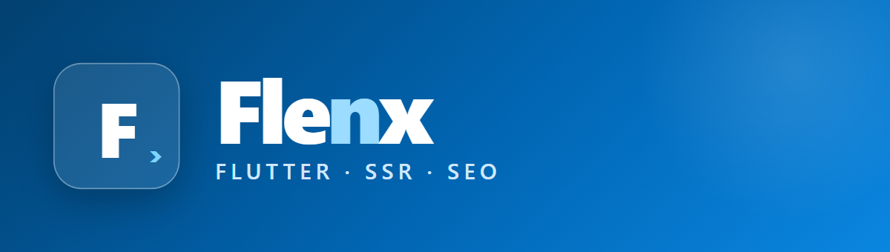

Você escreve só Dart — sem HTML/CSS. O Flenx faz SSR, embute widgets Flutter como ilhas e gera SEO/sitemap/llms.txt automaticamente.
Comece com um site SSR + SEO em minutos. Ative blog, admin, APIs e banco conforme o projeto cresce.
Componentes FlenxColumn, FlenxHero, FlenxCard… geram o HTML/CSS por baixo.
Meta tags, Open Graph, JSON-LD, sitemap, robots e llms.txt a partir de uma única definição de rota.
Posts em Markdown e/ou banco, com editor estilo G1, categorias, tags, busca e paginação.
Ilha Flutter pronta: CRUD genérico, permissões por papel e edição da home.
Endpoints declarativos (Dart ou PHP) e banco plugável: Supabase, Firebase, REST ou JSONL.
Widgets Flutter reais hidratados no cliente, dentro das páginas SSR.
Cada um é um site SSR completo, feito 100% em Dart. Os botões "Ver site" abrem um preview estático das páginas públicas — admin/carrinho/APIs precisam de servidor (PHP ou Dart). Código no repositório.
Landing + blog (Markdown e banco) + painel admin com editor de posts e APIs declarativas.
Catálogo do banco, carrinho de compras (ilha Flutter), checkout que gera pedidos e admin de produtos/pedidos/usuários.
Manchete, categorias, autor e data, editor de notícias estilo G1 e edição da tela inicial pelo admin.
dart pub add flenx jaspr dart pub add dev:build_runner dev:build_web_compilers dev:jaspr_builder dart run flenx:bootstrap # gera os entrypoints do jaspr dart pub global activate jaspr_cli jaspr serve # http://localhost:8080 (hot reload)
Os exemplos são SSR — rode localmente com jaspr serve na pasta de cada um.